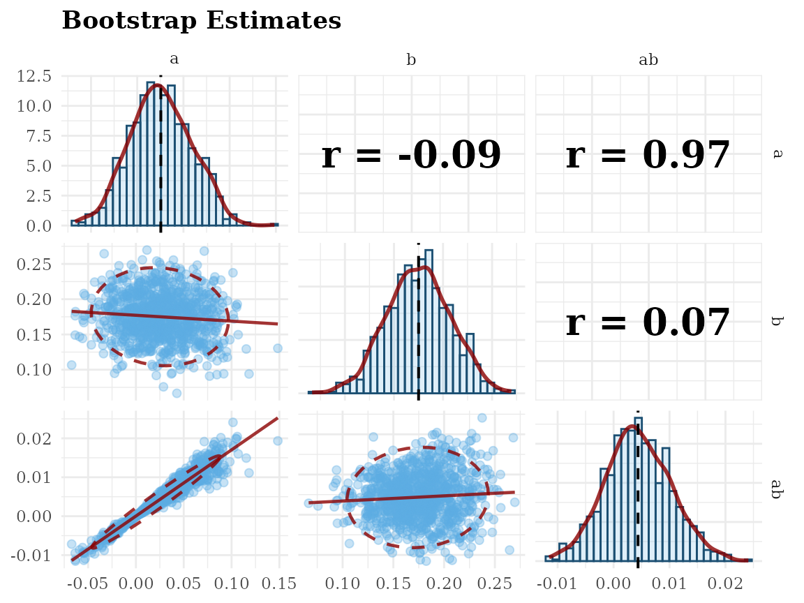

Overview
This vignette demonstrates how to form bootstrapping confidence intervals and examining bootstrap estimates in SEM using semboottools.
library(semboottools)
library(lavaan)
#> This is lavaan 0.6-19
#> lavaan is FREE software! Please report any bugs.Example: Simple Mediation Model
We use a simple mediation model with a large sample (N = 1000).
This model includes: A predictor x, A mediator m, An outcome y.
Indirect effect (ab) and total effect (total) defined.
# Set seed for reproducibility
set.seed(1234)
# Generate data
n <- 1000
x <- runif(n) - 0.5
m <- 0.20 * x + rnorm(n)
y <- 0.17 * m + rnorm(n)
dat <- data.frame(x, y, m)
# Specify mediation model in lavaan syntax
mod <- '
m ~ a * x
y ~ b * m + cp * x
ab := a * b
total := a * b + cp
'Fit the Model with Bootstrapping
fit <- sem(mod, data = dat, fixed.x = FALSE)
summary(fit, ci = TRUE)
#> lavaan 0.6-19 ended normally after 6 iterations
#>
#> Estimator ML
#> Optimization method NLMINB
#> Number of model parameters 6
#>
#> Number of observations 1000
#>
#> Model Test User Model:
#>
#> Test statistic 0.000
#> Degrees of freedom 0
#>
#> Parameter Estimates:
#>
#> Standard errors Standard
#> Information Expected
#> Information saturated (h1) model Structured
#>
#> Regressions:
#> Estimate Std.Err z-value P(>|z|) ci.lower ci.upper
#> m ~
#> x (a) 0.089 0.103 0.867 0.386 -0.113 0.291
#> y ~
#> m (b) 0.192 0.034 5.578 0.000 0.125 0.260
#> x (cp) -0.018 0.112 -0.162 0.871 -0.238 0.202
#>
#> Variances:
#> Estimate Std.Err z-value P(>|z|) ci.lower ci.upper
#> .m 0.898 0.040 22.361 0.000 0.819 0.977
#> .y 1.065 0.048 22.361 0.000 0.972 1.159
#> x 0.085 0.004 22.361 0.000 0.077 0.092
#>
#> Defined Parameters:
#> Estimate Std.Err z-value P(>|z|) ci.lower ci.upper
#> ab 0.017 0.020 0.857 0.392 -0.022 0.056
#> total -0.001 0.114 -0.009 0.993 -0.224 0.222
# Ensure bootstrap estimates are stored
fit <- store_boot(fit) Form Bootstrap CIs for Standardized Coefficients
# Basic usage: default settings
# Compute standardized solution with percentile bootstrap CIs
std_boot <- standardizedSolution_boot(fit)
print(std_boot)
#>
#> Bootstrapping:
#>
#> Valid Bootstrap Samples: 1000
#> Level of Confidence: 95.0%
#> CI Type: Percentile
#> P-Value: Asymmetric
#> Standardization Type: std.all
#>
#> Parameter Estimates Settings:
#>
#> Standard errors: Standard
#> Information: Expected
#> Information saturated (h1) model: Structured
#>
#> Regressions:
#> Std SE p CI.Lo CI.Up bSE bp bCI.Lo bCI.Up
#> m ~
#> x (a) 0.027 0.032 0.386 -0.035 0.089 0.033 0.446 -0.037 0.089
#> y ~
#> m (b) 0.174 0.031 0.000 0.114 0.234 0.032 0.000 0.109 0.237
#> x (cp) -0.005 0.031 0.871 -0.066 0.056 0.031 0.868 -0.067 0.059
#>
#> Variances:
#> Std SE p CI.Lo CI.Up bSE bp bCI.Lo bCI.Up
#> .m 0.999 0.002 0.000 0.996 1.003 0.002 0.000 0.992 1.000
#> .y 0.970 0.011 0.000 0.949 0.991 0.011 0.000 0.943 0.986
#> x 1.000
#>
#> Defined Parameters:
#> Std SE p CI.Lo CI.Up bSE bp bCI.Lo bCI.Up
#> ab (ab) 0.005 0.006 0.391 -0.006 0.016 0.006 0.446 -0.007 0.016
#> total (total) -0.000 0.032 0.993 -0.062 0.062 0.032 0.994 -0.065 0.064
#>
#> Footnote:
#> - Std: Standardized estimates.
#> - SE: Delta method standard errors.
#> - p: Delta method p-values.
#> - CI.Lo, CI.Up: Delta method confidence intervals.
#> - bSE: Bootstrap standard errors.
#> - bCI.Lo, bCI.Up: Bootstrap confidence intervals.
#> - bp: Bootstrap p-values.Form Bootstrap CIs for for Unstandardized Cofficients
‘parameterEstimates_boot()’ computes bootstrap CIs, standard errors, and optional asymmetric p-values for unstandardized parameter estimates, including both free and user-defined parameters.
It requires bootstrap estimates stored via store_boot(), supports percentile and bias-corrected CIs, and outputs bootstrap SEs as the standard deviation of estimates.
# Basic usage: default settings
# Compute unstandardized solution with percentile bootstrap CIs
est_boot <- parameterEstimates_boot(fit)
# Print results
print(est_boot)
#>
#> Bootstrapping:
#>
#> Valid Bootstrap Samples: 1000
#> Level of Confidence: 95.0%
#> CI Type: Percentile
#> P-Value: Asymmetric
#>
#> Parameter Estimates Settings:
#>
#> Standard errors: Standard
#> Information: Expected
#> Information saturated (h1) model: Structured
#>
#> Regressions:
#> Estimate SE p CI.Lo CI.Up bSE bp bCI.Lo bCI.Up
#> m ~
#> x (a) 0.089 0.103 0.386 -0.113 0.291 0.108 0.446 -0.121 0.287
#> y ~
#> m (b) 0.192 0.034 0.000 0.125 0.260 0.037 0.000 0.121 0.265
#> x (cp) -0.018 0.112 0.871 -0.238 0.202 0.112 0.868 -0.240 0.214
#>
#> Variances:
#> Estimate SE p CI.Lo CI.Up bSE bp bCI.Lo bCI.Up
#> .m 0.898 0.040 0.000 0.819 0.977 0.041 0.000 0.820 0.983
#> .y 1.065 0.048 0.000 0.972 1.159 0.045 0.000 0.973 1.151
#> x 0.085 0.004 0.000 0.077 0.092 0.002 0.000 0.080 0.089
#>
#> Defined Parameters:
#> Estimate SE p CI.Lo CI.Up bSE bp bCI.Lo bCI.Up
#> ab (ab) 0.017 0.020 0.392 -0.022 0.056 0.021 0.446 -0.025 0.059
#> total (total) -0.001 0.114 0.993 -0.224 0.222 0.115 0.994 -0.229 0.225
#>
#> Footnote:
#> - SE: Original standard errors.
#> - p: Original p-values.
#> - CI.Lo, CI.Up: Original confidence intervals.
#> - bSE: Bootstrap standard errors.
#> - bCI.Lo, bCI.Up: Bootstrap confidence intervals.
#> - bp: Bootstrap p-values.Visualize Bootstrap Estimates
To examine the distribution of bootstrap estimates, two functions are available:
hist_qq_boot()
For histogram + normal QQ-plot of one parameter.scatter_boot()
For scatterplot matrix of two or more parameters.
Histogram and QQ Plot: hist_qq_boot()
# For estimates of user-defined parameters,
hist_qq_boot(fit, "ab", standardized = FALSE)
# For estimates in standardized solution,
hist_qq_boot(fit, "ab", standardized = TRUE)Scatterplot Matrix: scatter_boot()
# standardized solution
scatter_boot(fit, c("a", "b", "ab"), standardized = TRUE)
# unstandardized solution
scatter_boot(fit, c("a", "b", "ab"), standardized = FALSE)